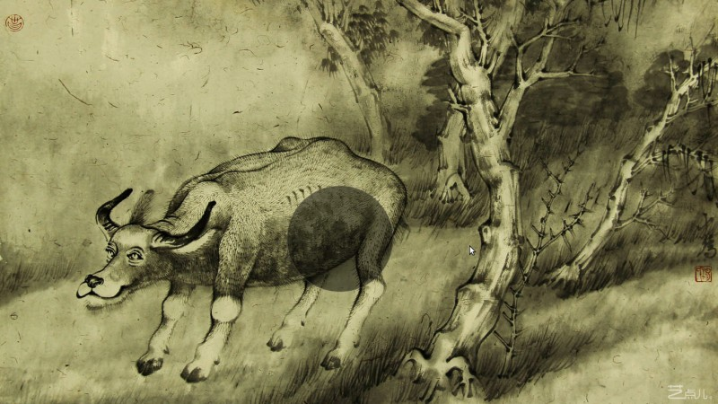
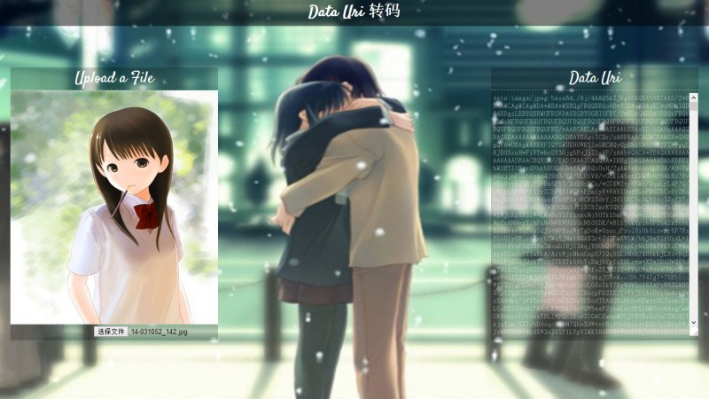

Fate.Saber
I am the bone of my sword
Steel is my body,and fire is my blood
I have created over a thousand blades
Unknown to Death
Nor known to Life
Have with stood pain to create many weapons
Yet,those hands will never hold anything
So as I pray,Unlimited Blade Works.
终于为那一身江南烟雨覆了天下， 容华谢后，不过一场，山河永寂。 随你走在天际，看繁花满地。 你的路途，从此不见我苍老。 也就这样，从此山水不相逢。 残阳退没，人天自两空。 If I should see you，after long year.Uri
The Wind Rises
The film is based on the manga of the same name, which is in turn based on a short story by Tatsuo Hori, a writer, poet and translator from mid-20th century(Showa period) Japan. Kaze Tachinu is a fictionalised biography of Jiro Horikoshi, designer of the Mitsubishi A6M Zero fighter aircraft which served in World War II.
-

- 祈祷
- Violin Ver
- Emperor of the Sea
曾记起，儿时看过的海神 (“Emperor of the Sea”)。天意弄我，让我选择了这个，西风不解恨,吹不散眉弯。当时的我，默默的看着，看着三人如同命运般的摧残着，惨淡一生，满眼悲凉。
我只能看到张保皋是怎样忍受人的一生一次又一次的磨难，是什么样的一直让他面对人生一次次的磨难而不低头，心存希望，是爱情，还是不甘于命运的心。悲惨的命运，不幸的人生，也许与婷花的相遇是一生最痛苦的悲剧。
只能看到婷花不得不与张保皋分离，面对阎长的苦恋，训练着自己独当一面，外柔内刚，这时的她沧桑历遍，已然坚定执拗。她实在命苦，一生承担的太多，能倾诉的却太少。错过了彼此最美好的年华，错过那温柔厮守的心愿。
每个人的内心都是极为复杂的，婷花和阎长都是内心极为孤独的人。这一点张保皋是幸福的，因为爱张保皋的好人都在不同时期给张保皋一种温暖，特别是郑年和彩铃都一直陪着他。而这些温暖婷花和阎长就少些。婷花有超人的理智，而阎长就更可怜了，一个感情丰富，内心孤独的男人，只能独守明月，望空楼。
The Demo Listas2
Demo.dataUri--2013.9.11
电脑摄像头读取你的图像然后识别你的动作，尽管识别率存在某些问题
Demo.ImageRecognition--2013.9.1
对图片的轮廓进行提取
Demo.photoShowShow--2013.8.22
以后要学学图片搜索，美女识别。。嘻嘻
Demo.painter--2013.8.2
功能有限
Demo.webCamera--2013.7.24
这次利用的是Html5的一个API做的一个web摄像头。时间比较短，做的好粗糙，所以。。>_<||
Demo.iPhone5--2013.5.26
一个网页版的iPhone5
Demo.Cursor--2013.4.21
一个下拉菜单的效果
Demo.MagicCircle--2013.4.14
其实UI不重要，音乐才是王道。
Four Best Friends
- Gauss: 素水年华，静安好
- Hilbert: 窗明几净，一世清
- Laplace: 坐数流萤，观林鸟
- Eular: 寒江独钓，啸长天
The Demo Listas1
Demo.dataUri--2013.8.28
将上传的图片或文本转码成base64，这个主要是用来对图片进行预览。
Demo.QQ4.3--2013.8.6-11
由于目前没有注册帐号功能，所以现在只是内测哦。
WebGL-Three.js-Tutorial.0.1--2013.7.24
看了教程，在原文的基础上总结了一番，和到一个程序里，更有利于像我们这些初学者学习。
Demo.LoveLetter--2013.7.12
利用别人做的信封效果，在此基础上二次加工的。
Demo.Lyric.Player--2013.5.16
图片大多数来自《茗记》，还有几个《秒5》。其中BGM才是我最喜欢的。
Demo.Baidu.Search--2013.4.30
百度那百年不变的首页让我还有什么可说的呢，于是给她改头换面，基因重组大变身。so cute
WebPage1.0--2013.4.9
这是第一个哟，嘻嘻